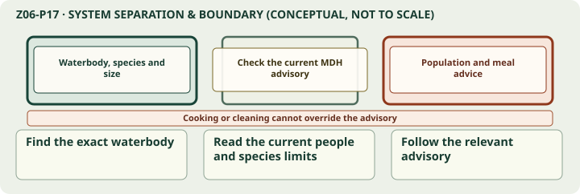

Z06-P17 · Hunting and fishing · New manuscript
PFAS and PCB Fish Advisories in Metro and Industrial Waters
Account for persistent industrial chemicals (PFAS and PCBs) that trigger strict meal limits or Do Not Eat advisories on specific waters.
When it applies · Twin Cities metro lakes, Mississippi River pools, Lake Superior, and waters near historic industrial or firefighting-foam sites.
Equipment · Current MDH waterbody advisory table.

Actions
- Consult MDH waterbody-specific notices for PFAS (per- and polyfluoroalkyl substances) and PCBs, which can drive far stricter limits than statewide mercury charts—including Do Not Eat notices.[H04]
- Recognize that PFAS distribute in blood and lean tissue as well as organs and cannot be removed by trimming fat, washing, or cooking.[H04, H05]
- Respect posted shoreline advisory signs and avoid harvesting fish near industrial outfalls, stormwater retention ponds, or active spill zones.[H04]
Failure recognition · Applying statewide mercury meal counts to a PFAS-restricted metro lake or retention pond exposes eaters to high persistent chemical doses.[H04]
Verify · Current MDH waterbody lookup confirms absence of Do Not Eat, PFAS, or PCB overrides before keeping fish for food.[H04]
Stop or change course · Stop keeping fish for consumption from any stormwater pond, spill-impacted water, or Do Not Eat advisory reach.[H04]
Evidence and editorial notes
- H04 · Minnesota Dept. of Health · Fish Consumption Guidance and Waterbody Advisories (Current web edition)
- Section: Waterbody-specific fish consumption advisories (mercury, PFAS, PCBs) · Conditions: Consuming Minnesota caught freshwater fish
Support: MDH issues species-, size-, and waterbody-specific meal-frequency limits for mercury, PCBs, and PFAS, with stricter limits for pregnant/nursing people and children under 15.
Limitations: Visual fish health and water clarity cannot detect mercury, PFAS, or PCBs; check current MDH waterbody lookup before eating caught fish. · Conflicting evidence: None noted.
Editorial note: Mandatory Z06 public-health fish advisory gate. · Specialist reviewer: Public-health toxicologist and MDH reviewer
Primary source · checked 2026-11-25 - H05 · Minnesota Dept. of Health · Fish Consumption Guidance Program Overview (Current web edition)
- Section: Trimming fat and skin limits for organic contaminants vs mercury · Conditions: Cleaning and preparing advisory-screened freshwater fish
Support: Trimming belly/dorsal fat and removing skin can reduce fat-soluble PCBs, but mercury binds in muscle tissue and cannot be trimmed or cooked out.
Limitations: Cleaning methods never replace checking waterbody-specific advisories or respecting do-not-eat notices. · Conflicting evidence: None noted.
Editorial note: Distinguishes PCB trimming from mercury persistence. · Specialist reviewer: Environmental health specialist
Primary source · checked 2026-11-25
Source lineage · New manuscript (Z06 P17 fish advisories) · Classification · New manuscript.